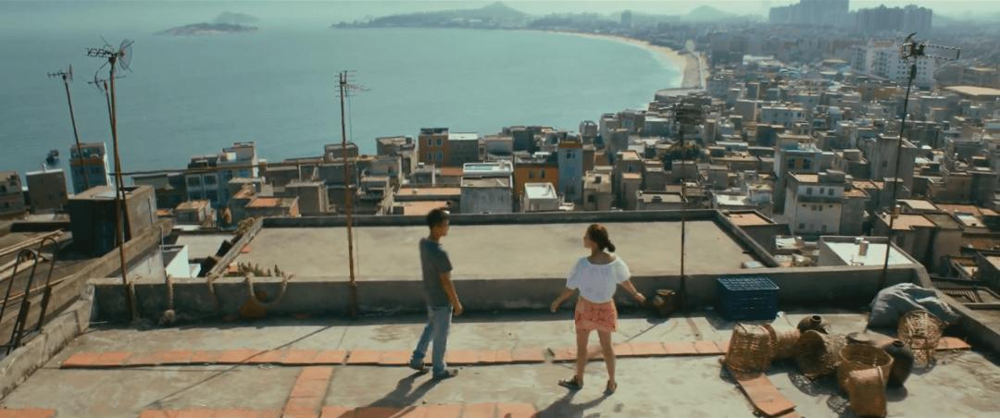
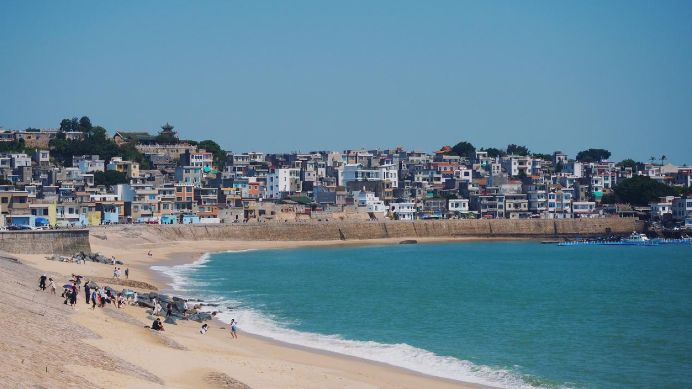
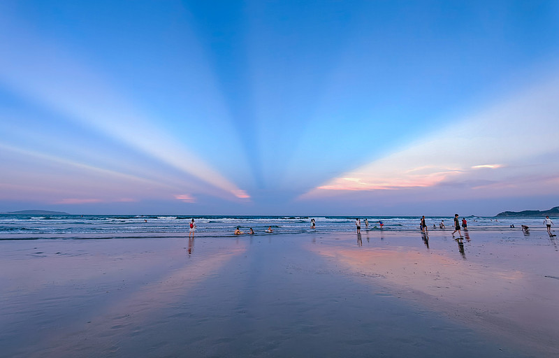
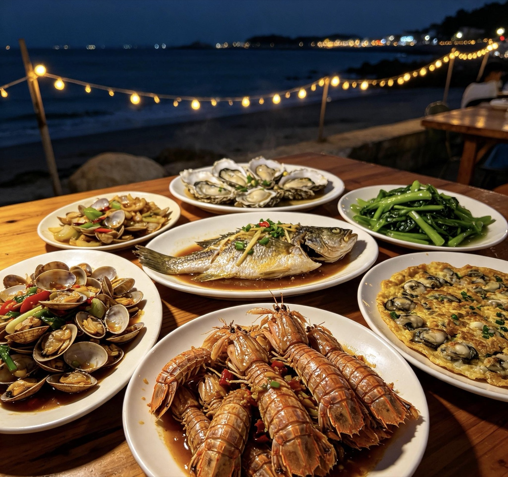
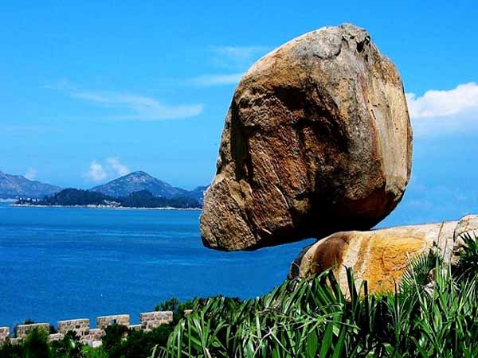
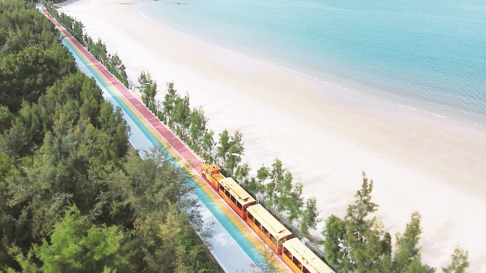
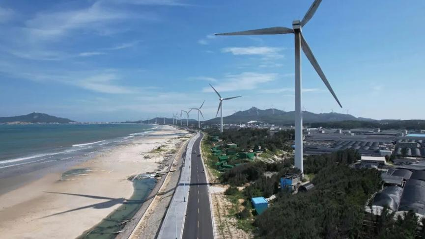

2026-09-28（周一）· 2 人自驾 · 潮州出发可晚归 · 全程几乎免门票，9 月开海海鲜正肥
中午饭后从潮州出发，从岛东北的铜陵镇开始一路向南串 4 站：顶街文公祠 → 苏峰山环岛路 → 金銮湾日落 → 铜陵夜市海鲜。蓝色为必去 A 档，橙色为有时间再去的 B 档。
地图底图为高德地图瓦片；点击标记可查看地点名称、时间带与亮点。导航：各点导航目的地见下方逐点「导航」行。
导航「南门湾停车场」，约 110km 高速
南门湾停车场 10 元/天，步行 3–5 分钟进顶街
大字墙·灯塔·涂鸦巷·左耳天台·南望天台
《左耳》取景地，彩色民居＋堤坝机位
车程约 25 分钟（南门湾 → 苏峰山）
蓝色大桥·观景台·岩雅古村；最晚 17:40 撤
车程约 20 分钟（苏峰山 → 金銮湾）
日落（约 18:00）· 退潮期镜面倒影大概率可见
车程约 20 分钟回铜陵镇
海鲜排档＋古城老街小吃；最晚 19:50 结束
约 21:30–22:00 到家
对照打勾，按 9 月晴日 26–32°C、紫外线 5 级强、傍晚海边风大准备。
| 类别 | 物品 | 说明 |
|---|---|---|
| 证件设备 | 身份证＋驾驶证 | 自驾必备 |
| 手机＋车载充电器/数据线 | 全程导航耗电快 | |
| 充电宝 | 拍照＋骑行一天 | |
| 离线地图 | 高德提前缓存潮州→东山岛及岛内各点，防信号弱 | |
| 防晒装备 | 防晒霜 SPF50+ | 出门前涂，午后补涂一次 |
| 遮阳帽/渔夫帽 | 顶街、海堤无遮阴 | |
| 墨镜 | 海边强光 | |
| 冰袖＋防晒衣 | 苏峰山骑电驴防晒防风 | |
| 衣物鞋 | 短袖 1–2 件 | 白天主力 |
| 薄外套 1 件 | 傍晚日落/夜市风大微凉 | |
| 防滑拖鞋或洞洞鞋 | 金銮湾沙滩、马銮湾踩水 | |
| 运动鞋 | 顶街石阶、苏峰山、步行 | |
| 备用换洗衣物 1 套 | 玩水湿身后换 | |
| 海边装备 | 手机防水袋 | 沙滩玩水、拍镜面倒影 |
| 毛巾/速干巾 | 湿身擦干 | |
| 纸巾/湿巾 | — | |
| 药品 | 肠胃药 | 海鲜排档/生腌后防不适 |
| 晕车药 | 备选（山路、夜捕小管乘船可用） | |
| 创可贴 | 礁石沙滩划伤 | |
| 驱蚊液＋风油精 | 傍晚海边蚊虫 | |
| 布洛芬 | 备选 | |
| 饮食 | 大容量水杯或瓶装水 2 瓶/人 | 日晒补水 |
| 少量零食/干粮 | 转场路上垫饥 | |
| 薄荷糖/口香糖 | 开车提神 | |
| 车辆杂项 | 加满油/查续航 | 往返约 220km＋岛上行驶 |
| 玻璃水、行车记录仪确认 | 出发前检查 | |
| 手机支架 | 车上导航 | |
| 少量现金 | 备停车场/小摊用 | |
| 垃圾袋 | 沙滩和车内收纳 | |
| 轻便背包 | 集中装以上物品，空手逛 |
| 分项 | 估算金额 | 说明 |
|---|---|---|
| 交通（油费＋高速） | 约 180–260 元 | 往返约 220km，含路桥，估算 |
| 门票 | 10 元起 | 文公祠观景平台免费（部分私人天台 5–10 元，现场为准）；风动石 45 元/人（线上约 42，可选） |
| 岛内交通 | 0–40 元 | 电驴 40 元/天（1 辆）或观光车 |
| 餐饮 | 约 200–260 元 | 顶街小吃＋咖啡约 60–100；海鲜晚餐 120–160 |
| 停车 | 10 元 | 南门湾停车场 |
| 机动（10–15%） | 约 50–80 元 | 临时消费与加项 |
| 合计 | 约 450–650 元 | 含风动石选项与机动额度，估算 |
A 档为必去主线，B 档只在满足触发条件时插入（规则见下方）。每站含导航、分步玩法（加粗为亮点）、避坑与实景参考。
东山岛人文精华都在铜陵镇。这条 600 年老街上街是精华段，网红店与打卡点集中，多钻旁边小巷藏着原汁原味老厝。
| 步骤 | 做什么（加粗为亮点） | 参考时长 |
|---|---|---|
| 1 | 南门湾停车场 → 步行进顶街 | 5 分钟 |
| 2 | 上街精华段：东山岛大字墙、51 号灯塔、涂鸦巷 | 15 分钟 |
| 3 | 东山图书馆：南洋花砖楼＋一楼文创店（顺路） | 10–15 分钟 |
| 4 | 朝圣楼（可选）：登楼眺望渔港与古城全景，门票 15 元 | 15 分钟 |
| 5 | 文公祠观景台 → 左耳天台（圆柱石墩处）→ 南望天台（绿荫小道下去，咖啡屋） | 25–30 分钟 |

顶街文公祠一带天台可俯瞰整个南门湾海岸线
《左耳》取景地，彩色渔村＋海堤日落是东山岛最出片的画面；本地人实测 15:30–18:30 是体验感最佳时段。
| 步骤 | 做什么（加粗为亮点） | 参考时长 |
|---|---|---|
| 1 | 顶街步行 5 分钟到海堤 | 5 分钟 |
| 2 | 沿海堤漫步：彩色临海民居＋渔船 | 15 分钟 |
| 3 | 堤坝机位：电影同款视角拍照 | 10 分钟 |

南门湾海堤旁的彩色临海民居
「福建最美环岛路」之一，一侧青山一侧碧海，蓝色大桥横跨悬崖。日落前 1 小时光线最好，正好是安排的时间。
| 步骤 | 做什么（加粗为亮点） | 参考时长 |
|---|---|---|
| 1 | 苏峰山停车场（南侧）→ 场内租电驴或乘观光车 | 10 分钟 |
| 2 | 上环岛路 → 网红蓝色大桥打卡 | 10 分钟 |
| 3 | 沿途观景台逐一拍照（海天一色机位） | 15 分钟 |
| 4 | 环岛路中段 → 岩雅古村/岩雅恋人（临海石头老房子＋礁石海浪） | 15 分钟 |
| 5 | 拍完原路返回或继续向前（环岛路单行线，勿逆行） | — |
苏峰山环岛路网红蓝色大桥
实景参考：抖音·苏峰山环岛骑行 · 抖音·J 人实测（含苏峰山三路线）
金銮湾沙滩坡度平缓，退潮后像一面镜子倒映天空。出行日若处于退潮期（9 月末参考：午后至傍晚多为退潮），傍晚大概率能看到天空之镜效果。
| 步骤 | 做什么（加粗为亮点） | 参考时长 |
|---|---|---|
| 1 | 到金銮湾沙滩：等日落（约 18:00）、拍镜面倒影 | 20 分钟 |
| 2 | 顺路马銮湾踩水（两湾车程约 10 分钟） | 10 分钟 |

金銮湾退潮后的镜面沙滩与晚霞
回铜陵镇（古城老街小吃或夜市排档）。码头周边高价排档溢价偏高，点菜先问价，不盲目选网红店。
| 推荐店 | 特色与价格 | 提示 |
|---|---|---|
| 友仁排档 | 海鲜池自选、明码标价 | 离南门湾近 |
| 呷饭 | 紫菜炒饭/白灼小管，人均 30–40 | — |
| 三角点姜母鸭 | 姜母鸭（全程不加水） | 南门湾分店离海湾约 100 米 |
| 同里沙茶面 | 20 余种加料自选，人均约 20 | 排队王 |
| 乌糖婶甜汤 | 黑芝麻牛奶冰招牌 | 1996 老字号，只开半天、排队多 |
| 林记铜山鸡腿 | 9.9 元蒜香炸鸡腿 | — |
| 方记烤吧 | 手工炭火烧烤 | — |

铜陵夜市的海鲜排档晚餐
实景参考：抖音·黄金一日路线＋必吃 · 抖音·保姆级逛吃攻略（美食）
B 档只在不影响日落（时间随季节变化）与 20:00 返程时插入；每个点都给了触发条件与衔接位置，超时就按「顶街→南门湾→马銮湾」顺序压缩。
「天下第一奇石」——高 4.37m、宽 4.57m、重约 200 吨，风吹能动却 600 年不倒；景区含铜山古城、关帝庙、虎崆滴玉。
| 步骤 | 做什么（加粗为亮点） | 参考时长 |
|---|---|---|
| 1 | 西门进 → 铜山古城墙登高眺望海湾 | 15 分钟 |
| 2 | 黄道周纪念馆 | 10 分钟 |
| 3 | 打卡风动石（侧面低角度拍照最出片，严禁攀爬推石） | 15 分钟 |
| 4 | 东山关帝庙（剪瓷雕精美，可摸「平安石」） | 15 分钟 |
| 5 | 滨海悬崖木栈道 → 虎崆滴玉海蚀石洞 | 25 分钟 |
| 6 | 东门出（南门出即南门湾，步行约 10 分钟衔接） | — |

坐落在海滨石崖上的东山风动石
实景参考：抖音·风动石景区云游（铜山古城文化）
多巴胺色彩的童话世界——七彩漫道、橙色海景小火车、玻璃秋千阵、天空之门，随手一拍都是文艺大片。
| 步骤 | 做什么（加粗为亮点） | 参考时长 |
|---|---|---|
| 1 | 七彩漫道/彩虹公路拍照 | 15 分钟 |
| 2 | 网红小火车（30 元/人，坐最后一排拍「追海浪」） | 20 分钟 |
| 3 | 玻璃秋千阵（涨潮时拍像漂在海上） | 15 分钟 |
| 4 | 天空之门（纯白建筑＋海天镜面倒影） | 10 分钟 |

彩蝶湾七彩漫道与海景小火车
东山岛最渔村的角落：最美风车环海公路（约 8.8km）、断桥、天涯澳角悬崖、退潮海底溶洞，傍晚正好看渔船归港。
| 步骤 | 做什么（加粗为亮点） | 参考时长 |
|---|---|---|
| 1 | 铜陵镇出发 → 乌礁湾风车公路（官方名「东山生态环岛路乌礁湾段」约 8.8km） | 车程约 30 分钟 |
| 2 | 风车公路拍照 → 断桥打卡 | 30 分钟 |
| 3 | 澳角村：天涯澳角悬崖、观景台俯瞰渔村 | 40 分钟 |
| 4 | 退潮海底溶洞（卡退潮、结伴） | 20 分钟 |
| 5 | 傍晚看渔船归港 | 20 分钟 |

乌礁湾风车环海公路
中午出发、潮汐窗口不对，这两个点确定不去；留作清晨出发方案（按下方节奏走，全程约半天）。
| 步骤 | 做什么（加粗为亮点） | 参考时长 |
|---|---|---|
| 1 | 金銮湾看日出（镜面沙滩） | 30 分钟 |
| 2 | 南屿双面海：退潮现海上小路＋灯塔（《你的婚礼》取景地，涨潮前撤） | 40 分钟 |
| 3 | 岐下村鱼骨沙洲：乘船上沙洲（船票约 80–120 元，航拍才震撼） | 40 分钟 |
实景参考：抖音·自驾游（含双面海退潮） · 抖音·3 天 2 晚（含鱼骨沙洲） · 抖音·潮汐核验示例
弹性兜底：怎么压缩、怎么加项、天气不对怎么办。
任何环节超时，按「顶街 → 南门湾 → 马銮湾」逐级压缩；再不够，苏峰山限 40 分钟、夜市晚餐缩短。
顶街逛得快 + 时间提前：加风动石（B1）；日落前有富余：加彩蝶湾（B2）；苏峰山后仍早：澳角二选一（B3）。
金銮湾日出 → 南屿双面海 → 岐下村鱼骨沙洲，全程约半天，需 5:30 前从潮州出发。
改走室内线：风动石景区、朝圣楼、顶街咖啡馆、铜陵老街小吃、关帝庙；或整体顺延一周。
按地点分组，出发前挑 2–3 条看即可建立实景预期。